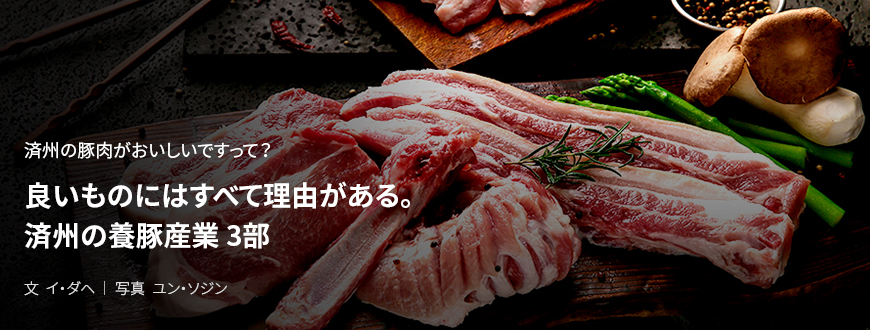
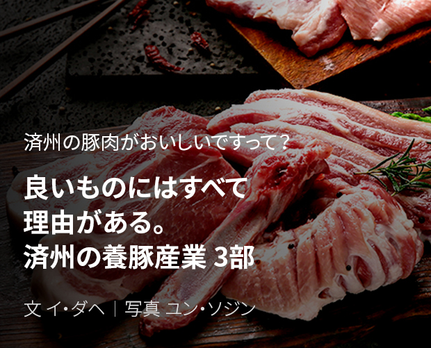
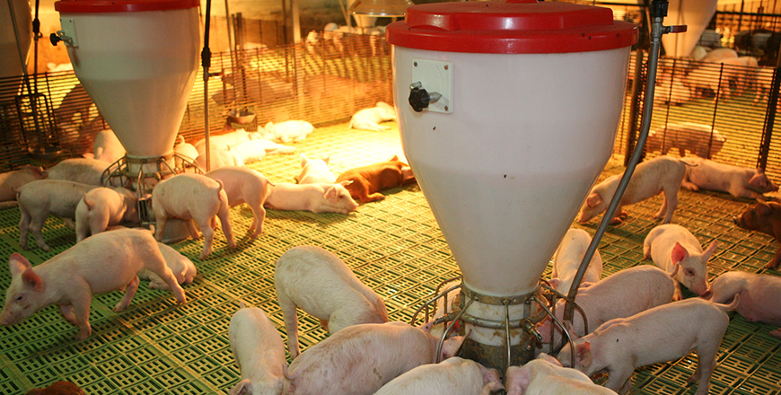
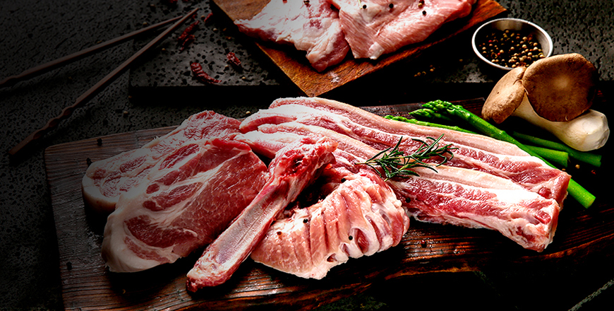

기획취재콘텐츠
- Home
- 제주라이프
- 기획취재콘텐츠
良いものにはすべて理由がある。済州の養豚産業 3部새로운 글



先進化した養豚産業の様子が気になるなら、済州東部畜産営農組合法人
スマート畜舎、エコ・自然循環農法、6次産業先導企業、済州東部畜産営農組合法人(代表キム・テウ、以下東部畜産)を語るときに欠かせない修飾語だ。1997年1月に設立された東部畜産は、済州地方単一規模の農場としては最大の3万5千坪の敷地に2万1千頭の豚を飼育する済州の養豚農家である。
- 東部畜産の全景。豚舎の周りに樹木を植え、まるで樹木園のような雰囲気
済州でごちそうがあるときは欠かせない伝統的な豚肉料理である。ⓒ東部畜産 -
済州でごちそうがあるときは欠かせない伝統的な豚肉料理である。ⓒ東部畜産 -
東部畜産は、良い種豚に負けないくらい養豚環境と飼料が豚肉の味と品質に影響を与えるということを認識し、良質な飼料と環境整備に多大な努力を払った。抗生剤フリー認証済の配合飼料と牧草で作った環境にやさしい飼料にこだわる。低い飼育密度を維持することによりストレスのない快適な環境を維持する。豚1頭に樹木1本を植える努力を通じてクリーンな環境を整備する。このような努力のおかげで東部畜産はエコ・自然循環農法により、2009年にはHACCPと環境にやさしい畜産農場に指定された。続いて2013年7月には環境にやさしい農産物(抗生剤フリー畜産物)認証を取得した。
2017年にはスマート畜舎システムを構築して高品質の豚肉を生産すると同時に経済性を確保する基盤を作った。 現在、東部畜産が導入した施設は環境管理機・哺乳母豚自動給餌機・冷房機で、環境管理機は豚舎の温度と湿度を表示し、適切な温度と湿度から大きく外れた場合はスマートフォーンのアラームが鳴る。哺乳母豚自動給餌機はボタンを押して母豚に飼料を与える装置で、母豚が食べる行動を観察して健康状態などをチェックすることができる。夏場の蒸し暑い天気のため豚がへい死することがないよう、冷房機も取り入れた。

- 東部畜産豚舎の内部、飼育環境の整備と飼料供給にスマートシステムを導入した ⓒ東部畜産 -
スマート畜産システムを構築して電算により重点的な管理が必要な豚や畜舎が把握しやすいため、管理時間が短縮しました。節約した時間とエネルギーを品質管理に集中させることによりへい死率が落ちて出荷時の体重は増加し、生産性が改善しました。
- ヒョン・ジンピョプ済州東部畜産次長
スマート畜舎システムの導入により飼育環境が管理しやすくなり、MSY(1頭の母豚が1年間生産した豚のうち、出荷できる体重になるまで生存して販売された豚の頭数)が0.3~0.5頭増加した。2019年、東部畜産からの出荷頭数は3万6300頭、MSYは22頭で韓国平均MSYの17.9頭に比べはるかに高かった。
東部畜産はスマート畜舎システムにへい死畜および堆肥高速発酵機と飼料量測定器を取り入れる予定。へい死畜および堆肥高速発酵機は、6か月間のテスト稼働を終えた。飼料量測定器を取り入れると、飼育する豚が摂取した飼料量を電算化して仕様管理に適用することができる。
高品質の豚肉生産システムを構築した東部畜産は、養豚産業の6次産業化を図っている。ソウル、京畿、忠清北道、全羅南道など合計20の加盟店を運営している済州豚肉の外食フランチャイズの「済州モントラック」は、東部畜産が共同設立したブランドだ。

- 済州モントラックではモントラックならではの技術で熟成した豚肉焼きが味わえる ⓒ済州モントラック -
東部畜産で生産する高品質の済州豚を済州モントラックならではの技術で熟成して消費者に提案する。単一の直営農場から供給される豚肉は均一な品質と味で消費者を魅了する。それにポークジャーキーと手作りソーセージなどの2次加工品を開発して直営店とオンラインショップで販売している。ポークジャーキーと手作りソーセージは、しっかりとした味で消費者から前向きな反応を得ている。
東部畜産は高品質の豚肉生産と競争力の確保に向けてさらに積極的に投資を拡大している。aT農食品流通教育院などの専門機関から教育を実施して流通専門家を育成するなど、養豚技術の向上に向けて先進地の訪問と新技術および新製品の導入にも投資を惜しまない。また、輸出に備えて輸出バイヤーとのミーティング、海外食品博覧会の参加など多方面で済州の豚肉を海外に発信する方策を模索している。
養豚産業、済州を活かして済州を発信する代表ブランドに
2020年1月、道内の豚肉流通業者の営農組合法人のタムライン(代表取締役コ・ドックン、以下タムライン)は、香港の鳳達グループと済州産豚肉の輸出契約を締結した。タムラインは、2020年3月から毎年400頭(30トン)規模で5年間済州産豚肉を香港に輸出する予定。輸出規模は合計1800トン、輸出額は240億ウォンと見通している。高品質の済州豚を生産する農家、積極的な海外マーケティングにより流通網を拡大した流通業者、輸出に必要な支援を惜しまなかった済州道が一緒に実現した驚くべき成果といえる。
養豚産業は高付加価値の1次産業です。2次加工業、3次サービス業までの拡張性があります。季節による影響が小さいため、持続的に適正の生産量が確保できます。それに飼料、遺伝学、獣医学にいたるまで多様な派生産業にも経済面の波及力を保有しています。道は今後も養豚産業の競争力を確保して共同発展の環境を整備するため、持続的に支援を行っていきます
- キム・ギョンジン済州特別自治道畜産課チームリーダー
済州道では養豚産業の競争力を確保するため生産技術の向上および流通の活性化を積極支援している。ICT融合・複合事業により適正の飼育頭数を維持することで飼育密度を調整し、糞尿処理と飼育環境管理のためのシステムを開発している。また、家畜糞尿引渡システムを構築して地域とウィンウィンできる持続可能な養豚産業への成長を図っている。
また、信頼できるクリーンな豚肉ブランドの構築に向けクリーン地域で生産された優秀な済州の豚肉は、JQ認証により品質を保証している。済州優秀製品品質認証制度のJQ認証は、済州産原料の使用および済州特別自治道内で生産する優秀な生産品に対して済州特別道知事がその品質を認証して統合商標を使用する権限を与える制度で、そこに無公害のクリーン畜産物生産管理制度としてFCG品質認証制度を取り入れ、△生産者の運営能力△対外信用度△飼育施設△種豚確保△生産技術△衛生管理△出荷条件など、生産と流通過程に問題がないと確認された場合にのみFCG認証を与える。
済州の伝統的な生活文化の一部として長い間道民と共にしてきた済州豚は、畜産農家と組合、そして畜産振興院などの養豚産業関係機関、さらに済州道の共同発展に向けた協力に基づいて済州道経済の大きな部分を担う産業として、そして世界に済州を発信するブランドとして着実に成長している。
이전글
다음글